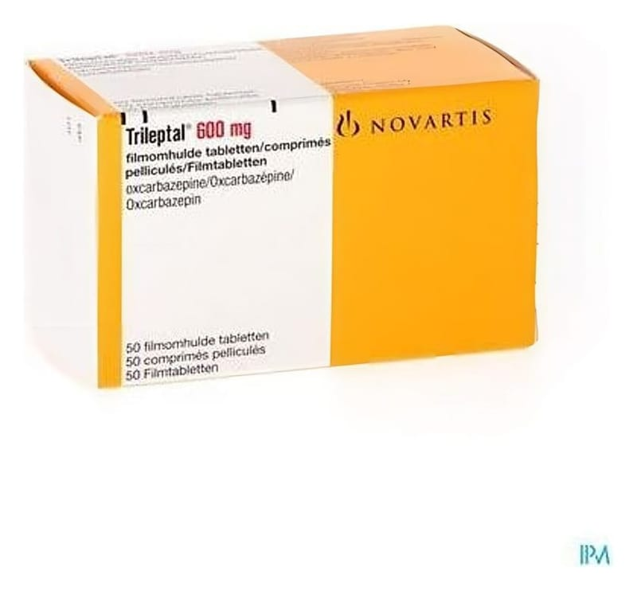

Trileptal 600 mg Film Kaplı Tablet, 50 Adet

Ne için kullanılır
KT · Bölüm 1TRİLEPTAL, 50 adet film kaplı tablet içeren blister ambalajda takdim edilmektedir. Açık pembe, oval, her iki yüzü hafifçe dışbükey ve çentikli tabletler. Bir tarafında "TF", çentik, ters "TF" ve diğer tarafta "CG", çentik, ters "CG" yazılıdır. Çentiğin amacı, yutmak için tabletin kırılmasını kolaylaştırmak ve ayrıca tabletlerin iki eşit doza bölünmesini sağlamaktır. Her bir tablet 600 mg etkin madde, okskarbazepin içerir. TRİLEPTAL antikonvülsanlar (nöbetlerin oluşmasını veya engellenmesini sağlayan ilaçlar) ya da antiepileptikler (epilepsi (sara hastalığı) tedavisinde kullanılan ilaçlar) olarak adlandırılan bir ilaç grubuna dahildir. TRİLEPTAL gibi epilepsi (sara hastalığı) ilaçları (antiepileptik ilaçlar) epilepsi için standart tedavidir.
Epilepsi, insanların tekrarlayan nöbetler ve kasılmalar yaşamasına neden olan bir beyin hastalığıdır. Nöbetler beynin elektriksel iletişim aktivitesinde sürekli olmayan, anlık bir bozulmadan kaynaklanmaktadır. Normalde, beyin hücreleri sinirler aracılığıyla kaslara organize ve düzenli bir şekilde uyarılar yollayarak vücudun hareketlerini düzenlemektedir. Epilepside, beyin hücreleri zaman zaman bozuk bir şekilde gereğinden çok fazla uyarı yollamaktadır. Bunun sonucu, epilepsi (sara) nöbeti olarak adlandırılan düzensiz kas hareketleri ortaya çıkabilmektedir. TRİLEPTAL beynin “aşırı uyarılabilir” duruma gelmiş olan sinir hücrelerini kontrol altında tutmak ve böylelikle bu tip nöbetleri baskılamak ya da sıklıklarını azaltmak suretiyle etkili olmaktadır. Başlıca iki epilepsi nöbeti sınıfı vardır: yaygın ve kısmi. Yaygın nöbetler beynin geniş bir bölgesini kapsamakta, bilinç kaybına yol açmakta ve tüm vücudu etkileyebilmektedir. Yaygın nöbetlerin de iki türü vardır: tonik-klonik (grand mal (büyük) ) ve absans nöbetleri (petit mal (küçük) ). Kısmi nöbetler beynin sınırlı bir alanını kapsamakla birlikte (yani belirli bir odaktan kaynaklanır), tüm beyne yayılarak, yaygın ikincil bir tonik-klonik nöbete yol açabilmektedir. İki tip kısmi nöbet mevcuttur: basit ve karmaşık. Basit kısmi nöbetlerde, hastanın şuuru yerinde iken, karmaşık kısmi nöbetlerde, hastanın bilinç düzeyi değişmektedir. TRİLEPTAL kısmi nöbetlerin (basit, karmaşık ve ikincil gelişen nöbetler) ve yaygın tonik- klonik nöbetlerin tedavisinde kullanılmaktadır. Genellikle, doktor sizin için veya çocuğunuz için en uygun olan ilacı bulmaya çalışacaktır fakat daha şiddetli epilepside, nöbetleri kontrol altına almak için iki ya da daha fazla ilacın birlikte kullanılması gerekebilir. TRİLEPTAL hem tek başına (yani monoterapi) hem de diğer antiepileptik ilaçlarla birlikte eşzamanlı olarak kullanılabilir. TRİLEPTAL, nöbet kontrolünde mevcut tedavinin yetersiz kaldığı durumda diğer antiepileptik ilaçların yerine kullanılabilir. TRİLEPTAL yetişkinlerde ve 6 yaş ve üstü çocuklarda kullanım içindir. TRİLEPTAL'in nasıl etki gösterdiği veya bu ilacın sizin için neden reçete edildiğine ilişkin herhangi bir sorunuz varsa doktorunuza danışınız.